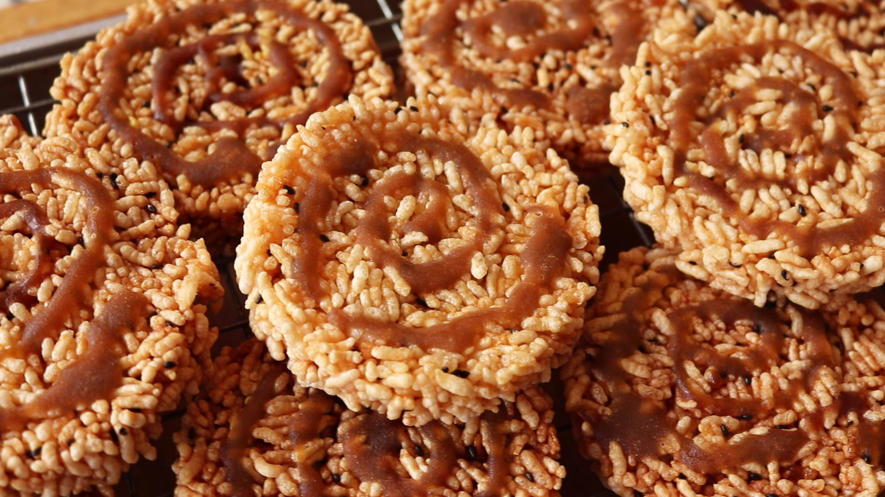

เกี่ยวกับตลาดกาดกองต้า
ตลาดกาดกองต้าเป็นตลาดโบราณริมแม่น้ำวัง มีอายุกว่า 100 ปี เป็นแหล่งรวมอาหารพื้นเมือง สินค้าหัตถกรรม และของฝากขึ้นชื่อของลำปาง
บรรยากาศของตลาดยังคงความย้อนยุค มีอาคารไม้เก่าแก่และวิถีชีวิตแบบดั้งเดิม เป็นสถานที่ยอดนิยมสำหรับการเดินเล่นและถ่ายภาพ
🛍️ สิ่งที่น่าสนใจในตลาด
- อาหารพื้นเมืองลำปาง เช่น ขนมจีนน้ำเงี้ยว ข้าวซอย แคบหมู
- ของฝากลำปาง เช่น ข้าวแต๋น ข้าวเกรียบปลา กาแฟลำปาง
- สินค้าหัตถกรรม เครื่องปั้นดินเผา ผ้าทอมือ
- อาคารไม้โบราณ สถาปัตยกรรมล้านนา
- บรรยากาศย้อนยุค เหมาะสำหรับการถ่ายภาพ
- วิถีชีวิตชุมชนริมแม่น้ำวัง
ข้อมูลสำหรับผู้เยี่ยมชม
📍 ที่อยู่: ถนนตลาดเก้าช้าง ตำบลสวนดอก อำเภอเมืองลำปาง จังหวัดลำปาง
⏰ เวลาเปิด: ทุกวัน 06:00 – 18:00 น. (บางร้านเปิดถึง 20:00 น.)
💰 งบประมาณ: 200–500 บาท
🚗 การเดินทาง: อยู่ใจกลางเมืองลำปาง เดินทางสะดวก
🅿️ ที่จอดรถ: มีลานจอดรถริมแม่น้ำวัง
📸 เวลาเหมาะถ่ายภาพ: ช่วงเช้าหรือบ่ายแก่

อาหารและของฝากแนะนำ

🍜 อาหารพื้นเมืองห้ามพลาด
- ขนมจีนน้ำเงี้ยว
- ข้าวซอยลำปาง
- แคบหมู
- ลาบหมู
- ขนมไทยโบราณ
🎁 ของฝากยอดนิยม
- ข้าวแต๋น
- ข้าวเกรียบปลา
- กาแฟลำปาง
- เครื่องปั้นดินเผาลำปาง
- ผ้าทอมือ

บรรยากาศตลาดกาดกองต้า